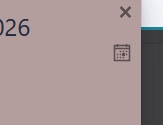
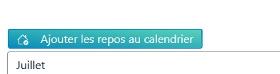
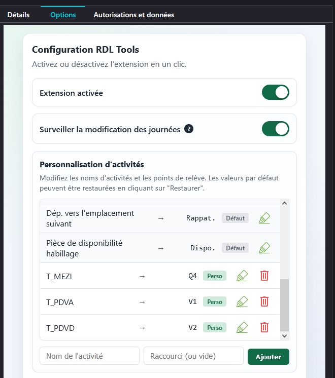
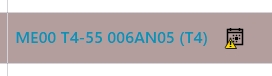

Exportez vos journées en ICS, puis gardez vos agendas personnels synchronisés.
RDL Tools s'adresse aux salariés RD Lyon ayant accès à l'application Service Voiture En Mobilité. L'extension transforme les journées affichées dans le roulement en fichiers ICS compatibles avec la majorité des agendas.
📌 Avant-propos
Cette extension est destinée aux salariés RD Lyon ayant accès au site Service Voiture En Mobilité. Elle n'essaie pas d'étendre les données du site au-delà de ce qui est affiché à l'écran.
✅ Ce que fait l'extension
Elle crée des fichiers ICS pour enregistrer vos jours de travail et de repos dans vos agendas personnels. Ce format est compatible avec la grande majorité des agendas modernes. Elle surveille les journées affichées pour signaler toute modification depuis la dernière génération d'ICS (optionnel).
❌ Ce qu'elle ne fait pas
Elle ne récupère pas d'historique externe et ne s'appuie que sur les journées visibles dans Service Voiture. Elle ne permet pas de poser des jours de congés, ni de faire des demandes de permutation. Elle ne modifie pas les informations affichées. Elle ne récupère aucune donnée personnelle et ne transmet rien à un serveur externe.
🧭 Notice explicative
Les captures ci-dessous montrent les points d'entrée principaux de l'extension et le panneau d'options.

Dans la fenêtre d'une journée, ce bouton génère puis télécharge un fichier ICS contenant la journée de travail affichée.

En haut de la liste des journées, ce bouton crée et télécharge un ICS regroupant les jours de repos visibles.

Le panneau d'options permet d'activer l'extension, de surveiller les changements de journées et de personnaliser les activités.
Surveillance des journées
RDL Tools compare les journées enregistrées avec le roulement affiché pour signaler une modification de la journée depuis la dernière génération d'ICS.

⚙️ Accès aux options selon le navigateur
Chrome
Ouvrez le menu principal, puis Extensions et la fiche de RDL Tools. Le bouton Options de l'extension permet d'accéder immédiatement à la configuration.
Edge
Ouvrez le menu principal, puis Extensions, sélectionnez RDL Tools et cliquez sur Options de l'extension. Si l'icône est épinglée, l'accès aux réglages est encore plus rapide.
Opera
Ouvrez le menu navigateur, puis Extensions, choisissez RDL Tools et ouvrez ses options. Vous pouvez aussi passer par l'icône de la barre d'outils pour aller directement aux réglages.
Firefox
Ouvrez le menu principal, puis Modules complémentaires et thèmes, sélectionnez RDL Tools, puis ouvrez ses options. Le panneau de configuration reprend les mêmes réglages que sur Chrome.
Firefox pour Android
Dans Firefox Mobile, allez dans le menu de l'application, puis la section des modules complémentaires. Choisissez RDL Tools pour ouvrir ses préférences lorsque l'environnement mobile le permet.
Synchronisation entre appareils
Les réglages synchronisables du navigateur peuvent suivre votre compte navigateur. Cela facilite l'usage de l'extension sur plusieurs appareils sans reconfigurer chaque préférence à la main.
📦 Installation
Deux voies sont prévues : l'installation depuis les stores officiels et l'installation d'archives empaquetées. Les versions Chrome fonctionnent aussi sur Edge et Opera : installation depuis le Chrome Web Store ou installation manuelle via l'archive selon vos préférences. L'installation via les stores officiels est recommandée pour profiter des mises à jour automatiques.
Depuis les stores
Chrome Web Store : ouvrir sur Chrome Web Store
Edge : installer depuis Chrome Web Store
Opera : installer depuis Chrome Web Store
Firefox Add-ons : ouvrir sur AMO
Avantage : les mises à jour de l'extension sont déployées automatiquement via le store.
Depuis une archive empaquetée
Téléchargez l'archive Chrome, Edge, Opera ou Firefox depuis les releases GitHub, puis chargez-la via la procédure d'installation de votre navigateur. Les versions Chrome sont compatibles avec Edge et Opera pour une installation manuelle, destinée aux utilisateurs expérimentés.
🗂️ Versions empaquetées
La page GitHub peut héberger les dernières archives empaquetées pour Chrome, Edge, Opera et Firefox, ainsi que les versions antérieures via les GitHub Releases.
Dernières versions
- Archive Chrome : RDL Tools 3.0
- Archive Edge : compatible avec l'archive Chrome, pour installation manuelle.
- Archive Opera : compatible avec l'archive Chrome, pour installation manuelle.
- Archive Firefox : à publier dans les assets de release.
Versions précédentes
- Archives Firefox : [RDL Tools 2.0] [RDL Tools 2.1]
- Retrouvez toutes les versions précédentes dans les GitHub Releases